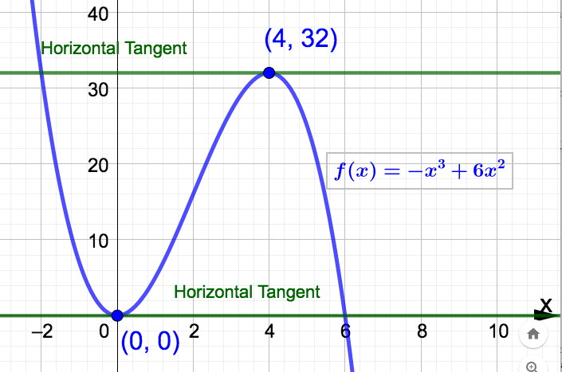

Section 3.5 Derivatives Using The Power Rule
The following rule gives us a convenient method to find the derivative of a function under certain circumstances. This will help us avoid having to use the limit definition of the derivative in many cases.
Theorem 3.5.1. (The Power Rule).
If \(k\) is any real number other than 0 and \(f(x) = x^k\text{,}\) then
\begin{equation*}
f'(x) = \dfrac{df}{dx} = kx^{k-1}.
\end{equation*}
Furthermore, if \(f(x)\) is a constant function, then \(f'(x) = \dfrac{df}{dx} = 0\text{.}\)
Example 3.5.2.
Find the following derivatives using Theorem 3.5.1.
\(f(x) = x^7\) (note that
\(k=7\))
Solution.
\begin{equation*}
f'(x) = 7x^{7-1} = 7x^6
\end{equation*}
\(g(t) = t\) (note that
\(k=1\))
Solution.
\begin{equation*}
\dfrac{dg}{dt} = 1t^{1-1} = t^0 = 1
\end{equation*}
\(k(s) = \dfrac{1}{s^4}\) Solution.Note that this is not in the form required by the
Theorem 3.5.1. So, we have to rewrite this function as
\(k(s) = \dfrac{1}{s^4} = s^{-4}\text{.}\) Since
\(k = -4\text{,}\)
\begin{equation*}
k'(s) = -4s^{-4-1} = -4s^{-5} = -\dfrac{4}{s^5}
\end{equation*}
\(f(z) = \sqrt[3]{z^2}\) Solution.Note that this is not in the form required by the
Theorem 3.5.1. So, we have to rewrite this function as
\(f(z) = \sqrt[3]{z^2} = z^{2/3}\text{.}\) Since
\(k=2/3\text{,}\)
\begin{equation*}
\dfrac{df}{dz} = \dfrac{2}{3}z^{2/3 - 1} = \dfrac{2}{3}z^{-1/3} = \dfrac{2}{3 \sqrt[3]{z}}
\end{equation*}
\(p(t) = \dfrac{4}{7}\) Solution.Since \(p\) is a constant function \(p'(t) = 0\text{.}\)
It's important to note that the Power Rule does not apply to functions such as
\(f(x) = 2^{x}\text{.}\) Functions such as this are called exponential functions (the variable is in the exponent) and require different techniques to differentiate. However, we can extend the
Theorem 3.5.1 to apply to finite sums and differences of scalar multiples of power functions,
\(x^k\text{,}\) using the following two properties of the derivative.
Properties of the Derivative: Let \(c\) be a real number and suppose that both \(f\) and \(g\) are differentiable. Then...
Example 3.5.3.
Find the following derivatives using Theorem 3.5.1 and the two properties above.
\(f(x) = x^3 + 3x^2\) Solution.
\begin{equation*}
f'(x) = 3x^{3-1} + 3(2x^{2-1}) = 3x^2 + 6x
\end{equation*}
\(q(t) = -4\sqrt{t} + \dfrac{2}{3\sqrt[4]t} + 6\) Solution.Let's first rewrite this function as
\(q(t) = -4t^{1/2} + \dfrac{2}{3}t^{-1/4} + 6\text{.}\) Now
\begin{equation*}
\dfrac{dq}{dt} = -4\left(\dfrac{1}{2}t^{1/2 -1}\right) +\dfrac{2}{3}\left(-\dfrac{1}{4}t^{-1/4 - 1}\right) + 0
\end{equation*}
which simplifies to
\begin{equation*}
\dfrac{dq}{dt} = -2t^{-1/2} - \dfrac{1}{6}t^{-5/4} = -\dfrac{2}{\sqrt{t}} - \dfrac{1}{6\sqrt[4]{t^5}}
\end{equation*}
\(N(m) = \dfrac{1}{\sqrt[3]{m^5}} + 3 \sqrt{m^3} + \dfrac{1}{2m^5} - \dfrac{1}{5}\text{.}\) Try this one out yourself. You should rewrite the function first.
Example 3.5.4.
The demand for a product is given by \(p = \dfrac{50,000 -x}{25,000}\) dollars, where \(x\) is the number of units of the product. Find and interpret the marginal revenue when 10,000 units of the product are produced. Solution.Let
\(R(x)\) be the revenue function. We are asked to find and interpret
\(MR(10,000)\text{.}\) First we need the revenue function. Recall that
\begin{equation*}
R(x) = \textrm{(number of units)(price per unit)}
\end{equation*}
which means
\begin{equation*}
R(x) = (x)\left( \dfrac{50,000-x}{25,000} \right) = \dfrac{50,000x}{25,000} - \dfrac{x^2}{25,000}
= 2x -\dfrac{x^2}{25,000}
\end{equation*}
so that after differentiating
\begin{equation*}
MR(x) = 2 - \dfrac{x}{12,500}.
\end{equation*}
Finally,
\(MR(10,000) = \$1.20 \: \dfrac{\textrm{dollars}}{\textrm{unit}} \) which means: When
\(x=10,000\) units are produced, revenue is increasing at an approximate rate of $1.20 per additional unit produced. In other words, the revenue generated from the 10,001
\(^{\textrm{st}}\) unit is approximately $1.20.
Example 3.5.5.
Find the points on the graph of \(f(x) = -x^3 + 6x^2\) at which the tangent line is horizontal. Solution.Observe that we don't have to graph
\(f(x)\) to do this. We want to know the points on the graph at which the tangent line has slope 0. Since the derivative gives us the slope of the tangent line, all we have to do is solve
\(f'(x) = 0\text{.}\) Since
\(f'(x) = -3x^2 + 12x\) we solve
\begin{align*}
f'(x) \amp = 0 \\
-3x^2 + 12x \amp = 0 \\
-3x(x-4) \amp = 0
\end{align*}
to get
\(x=0\) and
\(x=4\text{.}\) There are two points:
\((0,f(0)) = (0,0)\) and
\((4,f(4)) = (4,32)\text{.}\) See the graph below:
